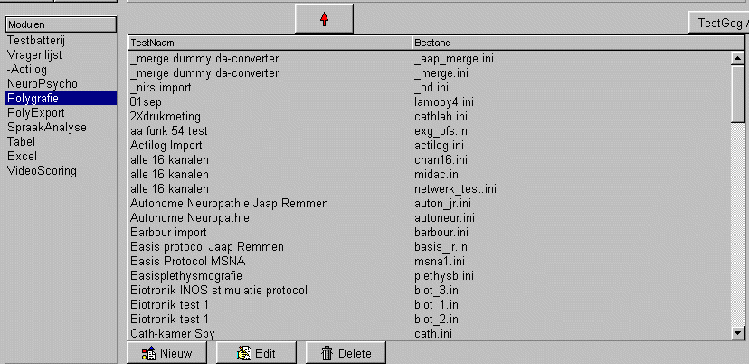

Besturingsknoppen
Patiënt Besturings Knoppen
|
Extra Text: opslaan en bekijken van additionele patient-tekst ExtraPars: al dan niet zichtbaar maken van de extra patient parameters Copy->A: een patient (geheel of gedeeltelijk) kopieren naar een andere directory Bekijken: de geselecteerde(n) testen in de patienten-testlijst bekijken. Print: Een patienten rapport maken. Starten: alle geplande testen voor de geselecteerde patient starten om af te nemen. Start Selectie: alleen de geselecteerde (en nog niet afgenomen) testen starten om af te nemen. Delete: de geselecteerde testen verwijderen. (uitgevoerde testen kunnen alleen worden verwijderd als dit is ingesteld via Instel / Systeem / ...). |
|

Overige Besturings-knoppen
|
|
|